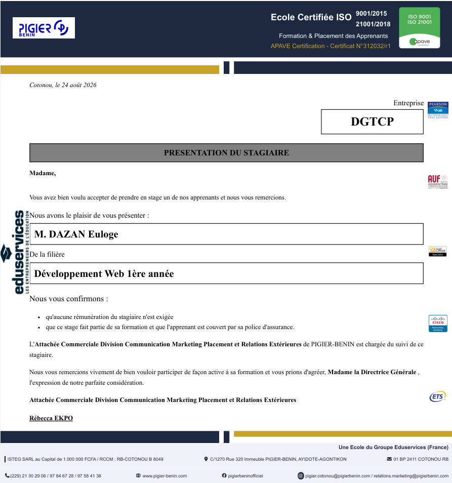

Bienvenue sur la plateforme de gestion des fiches de présentation des stagiaires de Pigier Bénin. Cet espace est destiné au signataire devant établir une fiche de présentation de stagiaire. Il vous suffit de renseigner vos informations (nom, prénom, poste et sexe), les détails de l’édition (lieu et date d'édition), la structure d'accueil du stagiaire, ainsi que les informations académiques de l’étudiant concerné (nom, prénoms, filière et niveau d’étude). Une fois le formulaire soumis, la fiche est automatiquement enregistrée et peut être prévisualisée ou imprimée à tout moment.

La fiche ci-dessus est la représentation d'une fiche de présentation de stagiaire portant les informations d'un étudiant remplis au préalabre dans le formulaire de la page suivante.